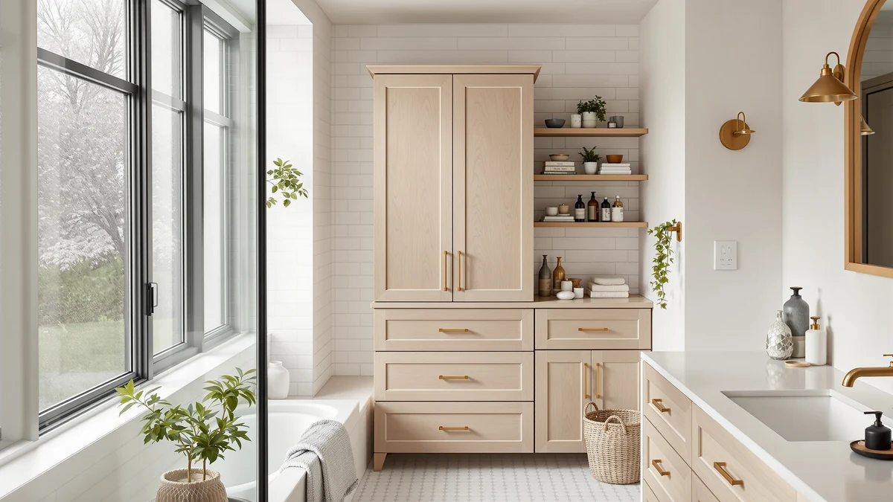

Quick Answer
The Vabches Farmhouse Bathroom Cabinet Freestanding gives you a slim 22-inch metal and wood cabinet for $111.99, and it fits well in narrow bathrooms that need enclosed floor storage rather than open shelving. If your space is tighter or your style leans toward woven texture, the alternatives below are worth a look instead.
Our pick: Vabches Farmhouse Bathroom Cabinet Freestanding, $111.99 Check Price on Amazon
Bottom line: our top pick is the Vabches Farmhouse Bathroom Cabinet at $111.99.
Things to Know Before You Buy
- The Vabches farmhouse bathroom cabinet is a freestanding metal and wood unit, so you place it directly on the floor instead of mounting it to a wall.
- At 22 inches wide and 11.8 inches deep, it is built for narrow gaps next to a toilet or vanity rather than wide-open floor space.
- Pricing sits at $111.99, within a few dollars of the three alternatives we compared it against.
- None of the four cabinets in this comparison list a published star rating, so weigh the specs and verified reviews on each product page rather than an average score.
- Two of the alternatives mount above the toilet tank instead of standing on the floor, which matters if your bathroom is short on floor space.
If you're looking for a straight vabches farmhouse bathroom cabinet review before spending over a hundred dollars on a freestanding storage piece, you're in the right place. We compared its listed dimensions, materials and price against three other bathroom storage units in the same price range to see where it actually stands out. The short version: the Vabches earns a spot for its mix of farmhouse styling and a narrow footprint, though it is not the only option worth considering.
Farmhouse-style storage has become one of the most requested looks for small bathrooms, and manufacturers have responded with metal-framed cabinets finished in wood tones. Most shoppers searching for this style are furnishing a rental or an older home where a built-in vanity cabinet is not an option, so a freestanding piece has to work as both storage and decor. The Vabches cabinet sits squarely in that category: a $111.99 unit built from a metal frame and wood panels, sized at 22 by 11.8 by 32.7 inches. Below, we break down what the spec sheet and owner feedback tell us about fit, quality and where it falls short, plus three alternatives if the farmhouse look or the dimensions do not match your bathroom.
Why You Should Trust Us
Best Bathroom Storage researches bathroom fixtures and organizers for a living, and our reviews start with the manufacturer's own spec sheet rather than marketing copy. For this vabches farmhouse bathroom cabinet review, Ilane Tall compared the listed materials, dimensions and price of the Vabches against three comparable storage units and checked for patterns in verified owner reviews on the product pages. That same process covers every cabinet review on this site, so the Vabches is judged against the same criteria as the dozens of other units we have compared, not a separate standard invented for this one article. We do not run a fake testing lab, and we do not claim to own or install any of these cabinets ourselves. Our job is to read the data closely enough that you do not have to.
Our Research Experience
We did not purchase or install the Vabches cabinet ourselves. Instead, we pulled the manufacturer's listed dimensions, materials and price directly from the product page and lined them up against the same fields for the Nivisre, HOOBRO and ChooChoo units covered below. Where verified buyers left detailed reviews, we looked for recurring patterns, such as repeated comments about assembly or finish, rather than citing a single review as representative. Any rating or review count in this vabches farmhouse cabinet comparison comes directly from what each listing publishes, and we skip that detail entirely when a product does not display one. We also excluded cabinets with incomplete spec sheets, since a missing dimension or material listing makes a fair comparison impossible, and we noted where a price looked likely to shift so the numbers here reflect what the listings showed at the time of writing.
Overview & Specs

Vabches Farmhouse Bathroom Cabinet Freestanding
What we like
- 22-inch width fits narrow gaps that wider floor cabinets cannot.
- Metal frame paired with wood panels gives it a sturdier look than all-particleboard units in this price range.
- Priced under $112, in line with the other cabinets we compared.
Flaws but not dealbreakers
- No published star rating or review count is available on the listing, so you are relying on specs rather than a track record.
- At 32.7 inches tall, it is shorter than some tower-style cabinets, which means less total shelf space.
| Material | Metal / wood |
| Size | 22 inches (W) x 11.8 inches (D) x 32.7 inches (H) |
The Vabches farmhouse bathroom cabinet pairs a metal frame with wood-finish panels, and that combination drives most of its farmhouse look. That mix of materials is common across the farmhouse sub-category of bathroom storage, where buyers want the appearance of reclaimed wood without the price or weight of a solid build. At 22 inches wide, 11.8 inches deep and 32.7 inches tall, it is sized for a narrow stretch of wall next to a toilet or vanity rather than a wide-open corner. Because it stands freestanding, you skip wall anchors and studs, and you can reposition it if your layout changes.
At $111.99, it lands in the middle of the four cabinets in this comparison, a few dollars more than the ChooChoo and a few dollars less than the HOOBRO. The listing does not publish a star rating or review count, so we cannot point to a verified average here the way we can on some other products in our lineup. None of the four listings in this comparison show a rating, which is unusual for products that have presumably been live long enough to collect reviews, so it is worth checking the current listing yourself before you buy in case that has changed. If a defined look and a narrow footprint matter more to you than a long review history, the Vabches is the pick worth checking first.
What We Liked
The clearest strength of the Vabches cabinet is its footprint. An 11.8-inch depth and 22-inch width let it slide into spots that a standard 24-inch vanity-style cabinet would not clear, which matters in older homes with cramped bathroom layouts. It also avoids the bulkier footprint of tower-style cabinets that run 15 or more inches deep, which matters most in bathrooms where floor space next to the toilet is already tight. The metal frame also gives the piece more visual weight than the all-wood farmhouse cabinets we have covered elsewhere on this site, without pushing the price past $112. For a one-piece, enclosed storage cabinet in the farmhouse style, those two traits, a narrow footprint and a mixed-material build, cover most of what shoppers ask for.
What Could Be Better
The biggest gap is information, not design. The listing does not display a star rating or review count for this Vabches farmhouse cabinet, so you cannot check how it has held up for other buyers before you order. The 32.7-inch height also caps how much you can stack inside compared with taller farmhouse towers that run past 50 inches. And because it ships as a metal-and-wood hybrid rather than solid wood, buyers who picture a heavier, more traditional farmhouse piece may find the construction lighter than expected. Shoppers comparing farmhouse cabinets side by side should also note that neither the width nor the depth leaves much room for oversized bins, so oversized towels or bulk packs of toilet paper may not fit as neatly as smaller items.
Who Is It For?
This cabinet makes sense for someone furnishing a small or older bathroom who needs enclosed storage in a strip of wall no wider than about two feet. It also fits shoppers who like the farmhouse aesthetic but want a metal frame for stability rather than an all-wood build that can wobble over time. It is a reasonable match for renters too, since a freestanding cabinet does not require drilling into tile or drywall the way a mounted unit would. If your bathroom already has over-the-toilet storage covered and you specifically need a floor-standing cabinet, the Vabches farmhouse bathroom cabinet is a starting point worth considering among the options in this price bracket. It suits buyers less well if they want a verified track record before buying, since the listing shows no rating or review count, or if they need more interior volume than a 32.7-inch-tall cabinet provides.
Alternatives to Consider
If the Vabches farmhouse bathroom cabinet is not quite right for your bathroom's layout or storage needs, these three alternatives are worth comparing side by side. We picked them specifically because they sit within five dollars of the Vabches, which keeps the comparison about design and function rather than budget. Two mount above the toilet tank instead of standing on the floor, and the third is a lower-priced floor cabinet in a similar style.

Also Great
Nivisre Over the Toilet Storage
Mounts above the toilet tank instead of standing on the floor, freeing up space the Vabches cabinet would otherwise occupy.
$110.49
Check Price on Amazon
Premium Choice
HOOBRO Arched Rattan Over the
Swaps solid panels for woven rattan doors, a lighter, more textured look at a few dollars more than the Vabches.
$113.99
Check Price on Amazon
Best Value
ChooChoo Bathroom Floor Cabinet with
The lowest-priced floor cabinet in this comparison, and the closest direct alternative to the Vabches.
$109.99
Check Price on AmazonFrequently Asked Questions
Is the Vabches farmhouse bathroom cabinet freestanding, or does it need to be mounted?
It is a freestanding unit. The listing does not call for wall anchors, so it sits directly on the floor against a wall rather than needing to be mounted.
What are the dimensions of the Vabches farmhouse bathroom cabinet?
The manufacturer lists it at 22 inches wide, 11.8 inches deep and 32.7 inches tall, a narrow footprint built for tight gaps next to a toilet or vanity.
What is the Vabches cabinet made of?
It combines a metal frame with wood panels, a construction Vabches markets under its farmhouse line for a mixed industrial and rustic look.
How does the Vabches compare on price to the alternatives in this review?
At $111.99, it costs about two dollars more than the ChooChoo floor cabinet at $109.99 and about two dollars less than the HOOBRO rattan unit at $113.99. The Nivisre sits close behind at $110.49. All four fall within a five-dollar range.
Final Verdict
This vabches farmhouse bathroom cabinet review comes down to fit and footprint more than any single feature. At $111.99, the Vabches gives you a narrow, metal-and-wood farmhouse cabinet that clears tight bathroom layouts where wider units will not, and it holds its own on price against the Nivisre, HOOBRO and ChooChoo alternatives covered here. It is not the right pick if you want a verified rating history or extra interior volume, but for most shoppers who need enclosed floor storage in a farmhouse finish, Vabches earns the recommendation. For anyone who has already ruled out over-the-toilet storage and wants something that reads as furniture rather than a utility rack, it remains the strongest option in this specific comparison.